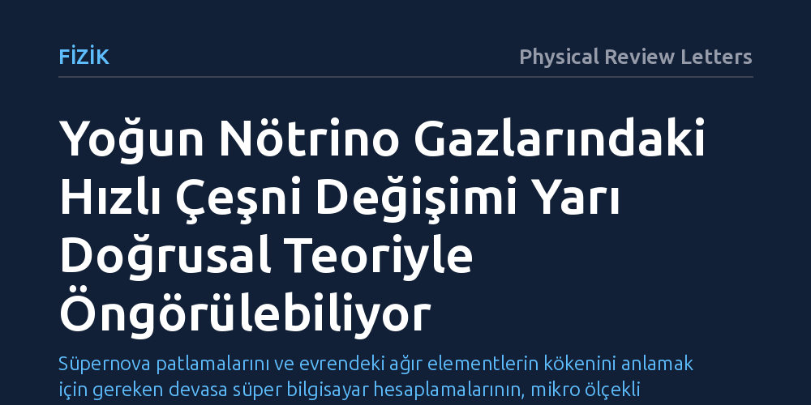

FIZIK · Physical Review Letters · 2026-10-26
Araştırmacılar, süpernovalardaki yoğun nötrino plazmalarında görülen hızlı tür dönüşümlerinin karmaşık doğrusal olmayan etkileşimler çözülmeden modellenip modellenemeyeceğini inceledi. Geliştirilen yarı doğrusal teorinin, kuantum simülasyonlarıyla neredeyse tam uyum sağlayarak nötrinoların kararlı son durumunu doğru öngördüğü bulundu.
Süpernova patlamalarını ve evrendeki ağır elementlerin kökenini anlamak için gereken devasa süper bilgisayar hesaplamalarının, mikro ölçekli kuantum karmaşasına takılmadan çok daha pratik modellerle çözülebileceğini gösteriyor.

Büyük kütleli yıldızlar ömürlerinin sonuna gelip kendi içlerine çöktüklerinde, evrenin en şiddetli patlamalarından biri olan süpernovalar meydana gelir. Bu devasa patlama anında, merkezdeki çöken çekirdekten akıl almaz miktarda nötrino salınır. Nötrinolar maddeyle neredeyse hiç etkileşmeyen hayalet parçacıklar olarak bilinse de süpernova çekirdeği gibi uç noktalarda yoğunlukları o kadar artar ki bu parçacıklar yoğun bir plazma oluşturarak birbirleriyle doğrudan ve çarpışmasız bir şekilde etkileşmeye başlar.
Nötrinolar elektron, müon ve tau olmak üzere üç farklı 'çeşni' ya da türde bulunur. Süpernovanın kalbindeki aşırı yoğun plazmada bu türler arasında 'hızlı çeşni kararsızlığı' adı verilen bir süreç tetiklenir; nötrinolar saniyenin milyarda biri gibi kısa sürelerde kimlik değiştirir. Bu dönüşüm süreci kritik bir öneme sahiptir; çünkü nötrinoların hangi türde olduğu, yıldızın dış katmanlarını itip patlamayı tetikleyecek enerjiyi aktarıp aktaramayacaklarını ve uzaya saçılan altın, platin gibi ağır elementlerin miktarını doğrudan belirler. Ancak bu kuantum salınımlarını tüm karmaşıklığıyla simüle etmek, günümüzün en güçlü süper bilgisayarlarının bile kapasitesini çok aşmaktadır.
Araştırmacılar, bu hesaplama darboğazını aşmak için klasik plazma fiziğinde elektron ve iyon dalgalarının davranışını açıklamakta kullanılan 'yarı doğrusal teori' yaklaşımına başvurdu. Bu kuramsal çerçevede nötrino tür dalgaları bağımsız doğrusal serbestlik dereceleri olarak ele alındı ve bu dalgaların kuantum enerji paketlerine 'flavomon' adı verildi.
Geliştirilen analitik modelde, dalgaların birbirleriyle girdiği küçük ölçekli karmaşık etkileşimler ihmal edildi. Bunun yerine yalnızca nötrinoların bu dalgalarla rezonans dışı etkileşimleri ve dalga yayılımının nötrino dağılımı üzerindeki geri tepkisi hesaba katıldı. Bilim insanları, istatistiksel olarak homojen ve eksenel simetriye sahip bir ortam kurgulayarak, elde ettikleri yarı doğrusal denklemleri tam kuantum kinetik denkleminin periyodik kutu simülasyonlarıyla doğrudan kıyasladı.
Yapılan sayısal karşılaştırmalar, basitleştirilmiş yarı doğrusal teorinin öngördüğü doymuş nötrino ve flavomon dağılımlarının, tam kuantum kinetik simülasyon sonuçlarıyla neredeyse kusursuz bir uyum içinde olduğunu ortaya koydu. Küçük ölçekli dalga-dalga süreçleri tamamen göz ardı edilmesine rağmen, sistemin ulaştığı nihai denge durumu yüksek bir doğrulukla hesaplanabildi.
Çalışmanın bir diğer çarpıcı bulgusu ise flavomon dalga fazlarının sistemin son durumu üzerinde neredeyse hiçbir belirleyici etkisinin bulunmaması oldu. Bu durum, kuantum düzeyindeki mikroskobik faz karmaşasının makroskopik denge durumunu bozmadığını gösterdi. Böylece, daha önce yalnızca sayısal simülasyonlarda görülen ancak nedeni tam açıklanamayan kararlı durum davranışına ilk kez sağlam bir kuramsal temel kazandırılmış oldu.
Elde edilen bulgular, süpernova ve nötron yıldızı birleşmesi simülasyonlarında nötrino aktarımını modelleyen astrofizikçiler için son derece pratik bir kapı aralıyor. Yıldız modellerine nötrino salınımlarını dahil etmek için mikroskobik ölçekteki doğrusal olmayan tüm çalkantıları tek tek çözmek yerine, yarı doğrusal yaklaşımla doğrudan makroskopik denge durumunu yakalamak mümkün hale gelebilir.
Yine de çalışmanın kapsamını gerçekçi değerlendirmek gerekir. Bu başarı henüz istatistiksel olarak homojen ve eksenel simetriye sahip periyodik bir kutu modeli içinde elde edilmiştir. Gerçek bir süpernova patlamasında karşılaşılan şiddetli madde yoğunluğu gradyanları ve asimetrik üç boyutlu akışlar altında yarı doğrusal teorinin başarısını sürdürüp sürdürmeyeceği, yapılacak ileri araştırmalarla netlik kazanacaktır.